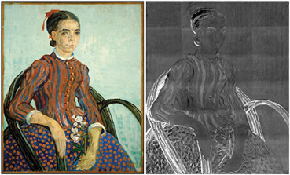

    <div class="block" >
      <sk-rotating-plane [hidden]="scenarioElt.title.en"></sk-rotating-plane>
      <a [routerLink]="['/scenario',scenarioElt.id]"    *ngIf="scenarioElt.title.en">
        <div class="title" data-toggle="tooltip" data-placement="top" title="" data-original-title="Tooltip on top"> <i class="ic icon-sskhome" aria-hidden="true"></i> 
          {{scenarioElt.shortTitle.en}}</div>        
          <!---->
          
        <p  *ngIf ="scenarioElt.title">{{scenarioElt.shortDesc?.en}}</p>
      </a>
    </div>